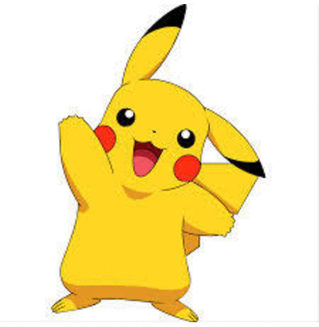

-
Bulbasaur #001

- Grama
- Veneno
há uma semente de planta em suas costas desde o dia que este pokemon nasce. A semente cresce lentamente.
-
Ivysaur #002

- Grama
- Veneno
Quando o bulbo cresce, aparece parecea perder a capacidade de ficar de pé em suas patas traseiras.
-
Venusaur #003

- Grama
- Veneno
sua planta floresce quando está absorvendo energia solar. Ele permanece em movimento para buscar a luz solar.
-
Charmander #004

- Fogo
tem preferencia por coisas quentes. Quando , diz-se que o vapor jorra da punta de sua cauda.Charmander é um pequeno lagarto bípede. Suas características ígneas são destacadas por sua cor de pele alaranjada e sua cauda, cuja ponta está envolta em chamas. Charmander e suas evoluções, Charmeleon e Charizard, têm uma pequena chama na ponta de suas caudas desde o nascimento.
-
Charmeleon #005

- Fogo
Gosta muito de brigas, por isso busca constantemente por adversários. Ele ataca com suas garras afiadas e usando sua cauda como chicote de fogo. Pode soltar chamas azuis quando muito animado.
-
Charizard #006

- Fogo
Charizard é um Pokémon do tipo Fogo e Voador introduzido na Geração I. Charizar . Um dos pokemóns mais temidos da região.
-
Squirtle #007

- Agua
Squirtle é baseado em uma tartaruga marinha. Tem uma pele azul claro e usa um casco e junto também tem uma calda longa azul.
-
Wartortle #008

- Agua
Sua cauda é grande e coberta com uma rica pelagem espessa. A cauda fica com uma coloração cada vez mais intensa com a idade do Wartortle. Os arranhões no seu casco são provas da resistência deste Pokémon como um combatente.
-
Blastoise #009

- Agua
E um Pokémon molusco do tipo água. Blastoise tem canos de água que se projetam de seu casco. Os canos de água são muito precisos. Eles podem disparar projéteis de água com uma precisão
-
Caterpie #010

- Inseto
é um Pokémon lagarta do tipo inseto. Caterpie tem um apetite voraz. Ele pode devorar folhas maiores do que o próprio corpo bem diante dos seus olhos. A partir de sua antena, este Pokémon
-
Pikachu #011
- Elétrico
Exclusivo para Pikachu é a capacidade de liberar eletricidade, descargas de intensidade variável, à vontade através de bolsas elétricas em suas bochechas. Essa energia elétrica pode ser manipulada em uma variedade de ataques que são usados principalmente em batalha, mas também podem ser usados para assar frutas.